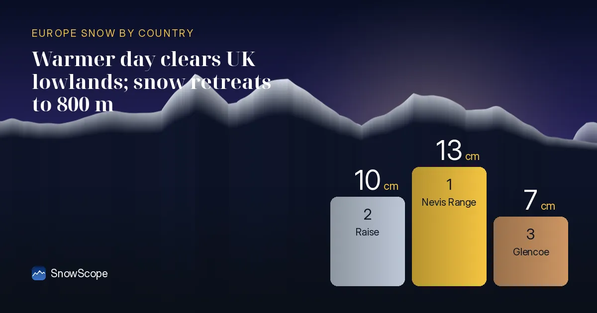

UK snow conditions, 16 November 2026: depth, fresh snow and the next days
In the UK, about 5,740 km² of high ground is white today, 1,290 km² less than yesterday. In other words, 15 % of the mapped high ground is white.
See the live snow forecast for Nevis Range in the SnowScope appSnow depth, powder alerts and the 3D map, free.
Snow on the ground
Most of the ground is white from about 800 m up. A week ago it was 270 km², so the cover has grown by 5,470 km².
| Resort | Snow depth | New snow, 72 h | Coming, next days | Top |
|---|---|---|---|---|
| Nevis Range | 13 cm | 5 cm | 6 cm | 1,190 m |
| Raise | 10 cm | 1 cm | 8 cm | 840 m |
| Glencoe | 7 cm | 3 cm | 9 cm | 1,079 m |
| Glenshee | 5 cm | 2 cm | 18 cm | 1,028 m |
| Cairngorm Mountain | 4 cm | 6 cm | 11 cm | 784 m |

Fresh snow
Three-day totals peak at 6 cm, around the Northwest Highlands, the Cairngorms and Ben Nevis and Lochaber.
At least 5 cm fell over some 800 km².

Low, middle and high ground
Climb and the snow gets deeper: between 0 and 500 m, under 1 cm on average, 9 % covered; between 500 and 1,000 m, 1 cm on average, 31 % covered; between 1,000 and 1,500 m, 4 cm on average, 89 % covered.
What it means on the slopes
The snow is retreating uphill, so plan on the higher lifts and avoid the low valley runs.
Keep an eye on the forecast: the coming snow could change the picture quickly.
Snow on the way?
Over the next three days up to 13 cm is expected, and up to 17 cm over the week.
The snowiest day looks like Tuesday 17 November, with up to 12 cm in the snowiest spots.
Best resorts right now
The deepest snow of the country's resorts is at Nevis Range: 13 cm.
Next on the list: Raise (10 cm), Glencoe (7 cm), Glenshee (5 cm) and Cairngorm Mountain (4 cm).
Nevis Range picked up 5 cm in the last three days and could add 6 cm by Thursday 19 November.
At Raise: 1 cm of fresh snow over three days, 8 cm more expected by Thursday 19 November.
Snow lies on the upper slopes of 7 out of 30 resorts in the UK.
Tips for skiers
- Read the local avalanche bulletin before going off-piste.
- Early-season snow is thin over rocks: ski the groomed runs first.
- Roads to the higher resorts may need winter tyres or chains.
About these numbers
Resort snow depths are the deepest snow on the resort's upper slopes from the SnowScope snow model (about 1 km, run of 16 November); they are estimates for an area, not a measurement at one point. Station values are measurements on the date shown. Forecasts can change. Always read the official avalanche bulletin before going off-piste.
Cite this report
For research, teaching or the press: the numbers and charts are free to reuse under CC BY 4.0 with this citation.
SnowScope (2026), UK snow conditions, 16 November 2026: depth, fresh snow and the next days, https://snowscope.app/blog/en/2026/11/uk-snow-report-16-november-2026.html, accessed 2026-11-16
SnowScope (Atlas Labs). (2026, November 16). UK snow conditions, 16 November 2026: depth, fresh snow and the next days. SnowScope snow reports. https://snowscope.app/blog/en/2026/11/uk-snow-report-16-november-2026.html
BibTeX
@misc{snowscope2026uksnowreport16november20,
author = {{SnowScope (Atlas Labs)}},
title = {UK snow conditions, 16 November 2026: depth, fresh snow and the next days},
year = {2026},
month = nov,
howpublished = {\url{https://snowscope.app/blog/en/2026/11/uk-snow-report-16-november-2026.html}},
note = {Published 2026-11-16 20:42 UTC; accessed 2026-11-16}
}· CC BY 4.0 · Methods, data and tools →
Nevis Range: snow and temperature by height, this winter vs last (tools) →
Follow Nevis Range
Free: a message when fresh snow is coming, and the forecast every morning.
More snow reports

Deer Valley ski conditions on 13 November 2026: no real snow on the ground yet, about 4 in near the top from the weekend storm, rain on the low East Village side below about 6,700 to 7,600 ft, and 11 in up top over the week.

Bogus Basin snow check for Boise skiers on 13 November 2026: no snow on the ground yet, rain and mixed snow this weekend with a snow level near 6,300 to 6,800 ft, then colder air and about 8 in at the summit by next week.